One paragraph to ChatGPT got me a decision tree for teaching medical students. Fifty-five versions taught me what was wrong with it. One of the wrong ones is Figure 3 of the paper.
Depth 1 → 5 on both.
Every version the AI generated looked finished. The work was in asking what each one would actually teach.
making it readable
The first version used six colors, partly because the dots also showed which patients the tree learned from. That was more than a student needed. Now there are two: red for heart disease, blue for none.
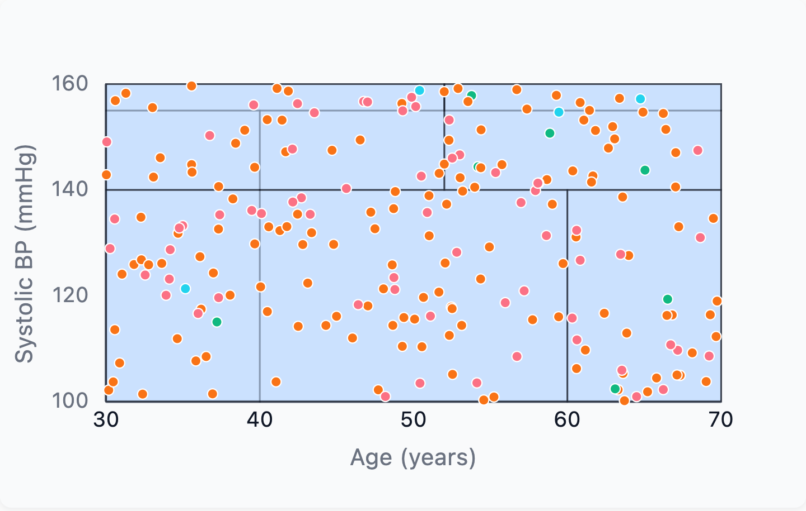
before, v23
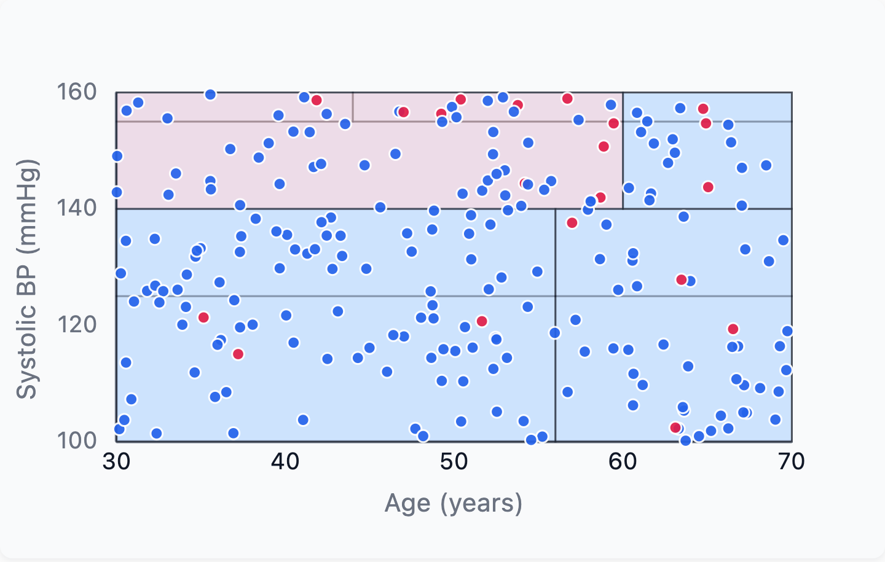
after, v24
making it right
In one version, patients with blood pressure above 150 came out safer than those below it. Random noise in a small group can do that, but it teaches the opposite of medicine. So I added a rule: older age or higher blood pressure can never lower the predicted risk.
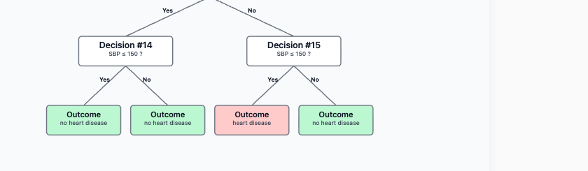
before, v42
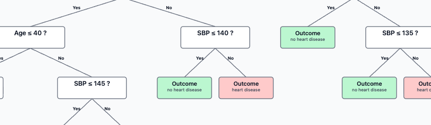
after, v43
With realistic effect sizes, most of the chart stayed blue. Age, blood pressure, smoking and diabetes each raised the risk too little to notice. The patients are simulated, so I roughly doubled every effect, and now you can watch the risk climb with age and blood pressure.
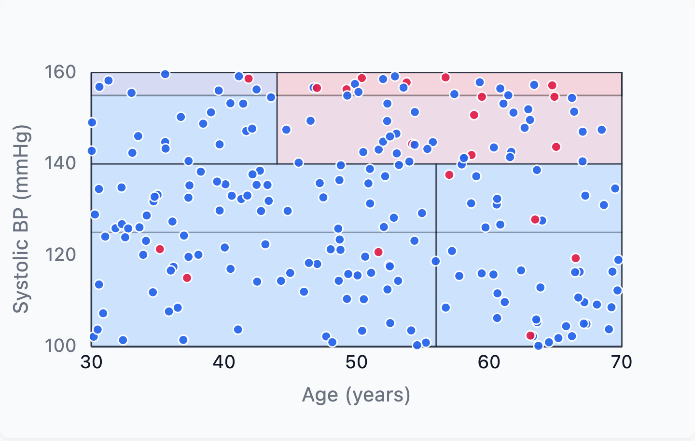
before, v43
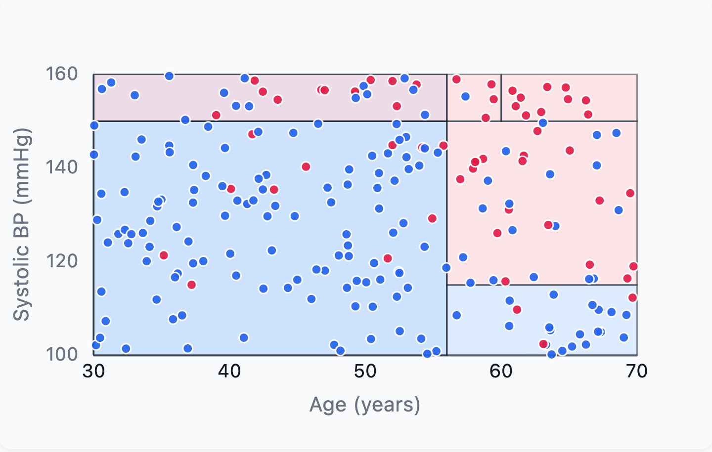
after, v44
In v44, a question about diabetes sent patients both ways to “no heart disease.” The math was fine: one side carried more risk, but neither crossed the 50% line. A student, though, sees a question that changes nothing. So for teaching, the tree keeps a split only when its two sides give different answers.
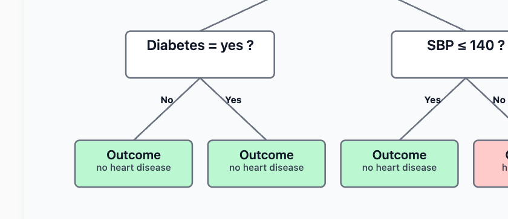
before, v44
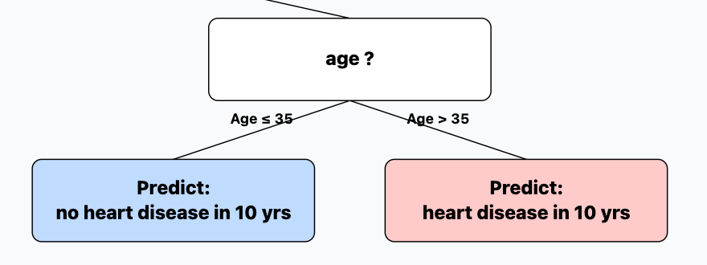
after, v52
I thought v29 was finished. The tree worked, but almost every branch ended in “no heart disease,” so a student would never see a question change the answer. It became Figure 3 in the paper.
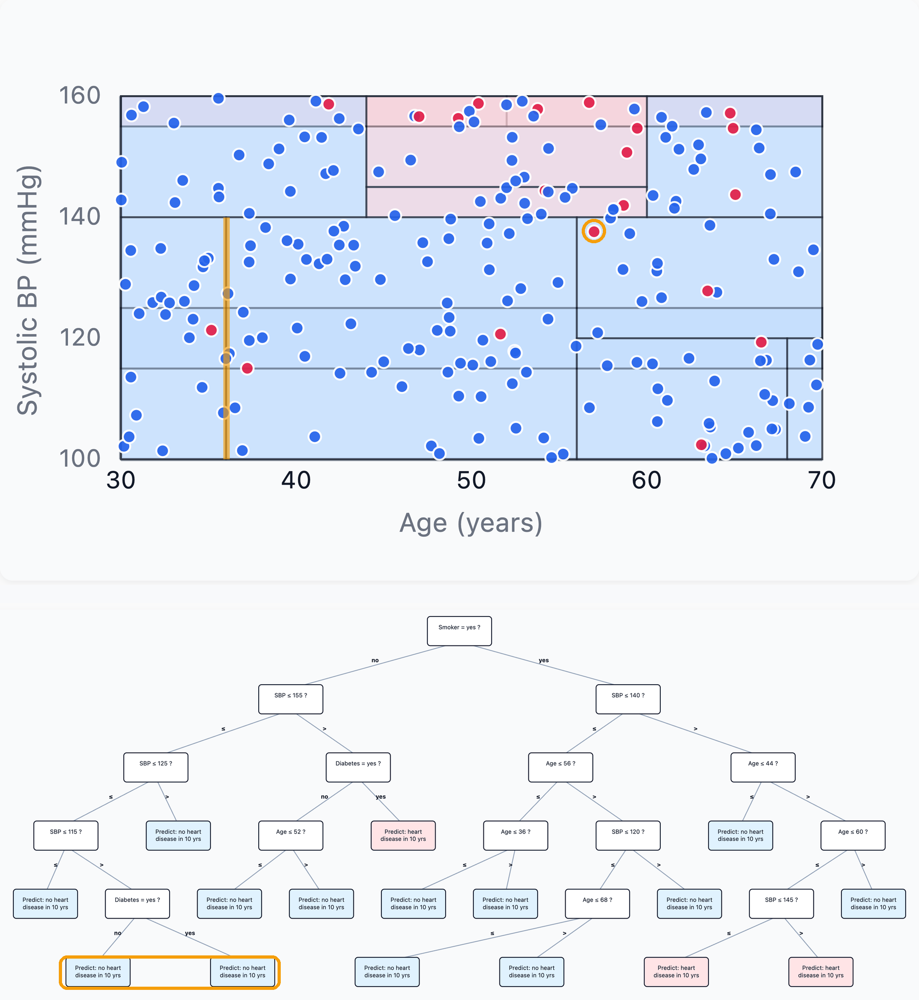
About one patient in nine had heart disease, so the majority answer was almost always no.
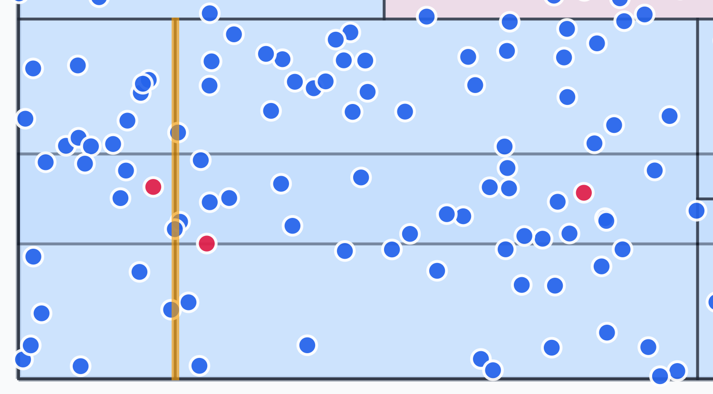
A split, but the same blue on both sides.
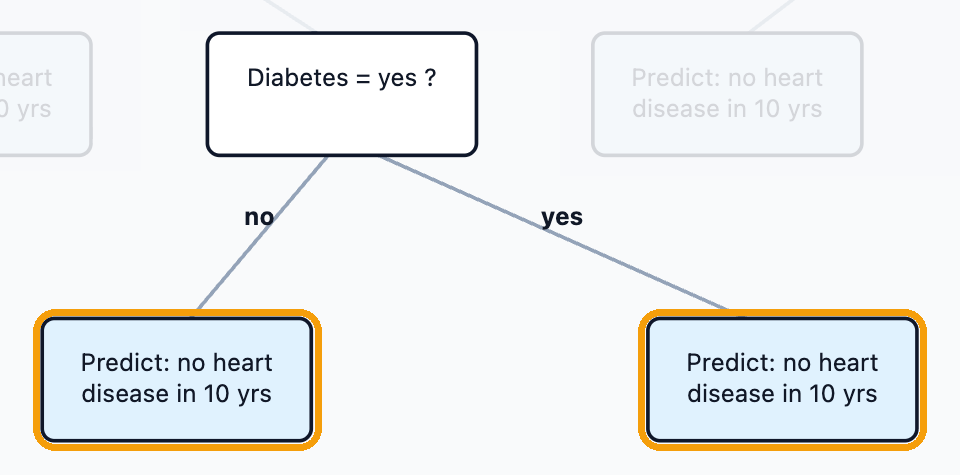
Diabetes or not, the same answer.
v29 at depth 5. Figure 3 of the paper is this version.
The decision tree was one of six teaching demos I built for this project. Each one teaches a single idea a clinician needs, and each went through its own rounds of revision.
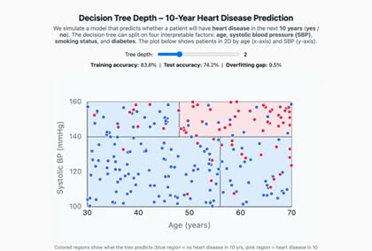
The one this page follows. Raise the depth and watch the tree ask more questions about each patient.
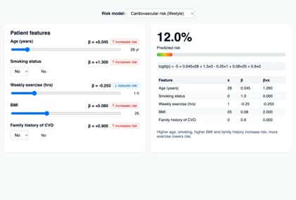
Change one patient feature and see how much each factor adds to the predicted risk.
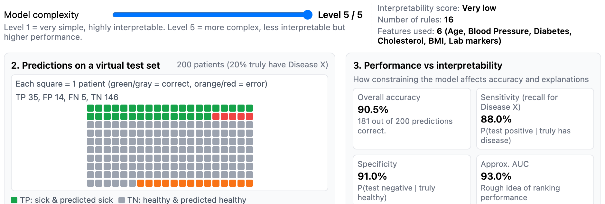
Turn up model complexity: accuracy rises, but the rules grow too many to explain.
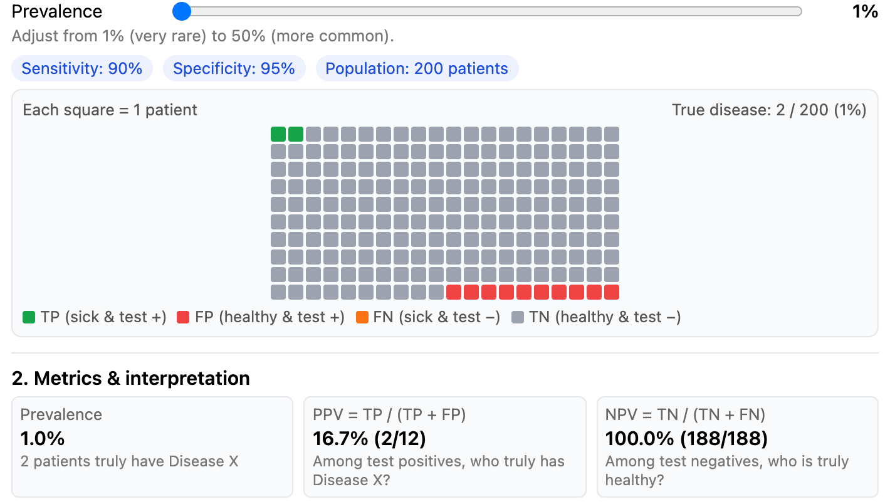
Make the disease rarer: the same 90%-sensitive test, and most positive results turn out false.
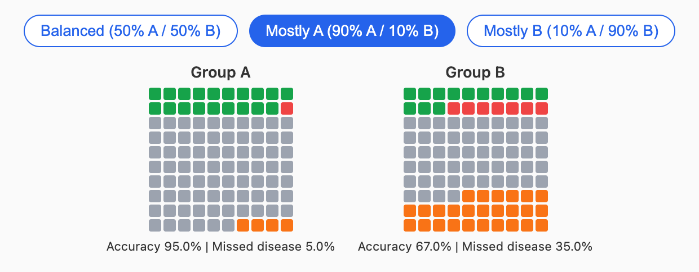
Train mostly on Group A: the model misses far more disease in Group B, though both get sick at the same rate.
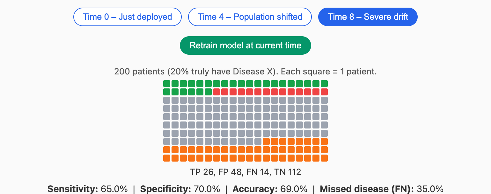
Move forward in time after deployment: the patients change, errors pile up, and retraining brings accuracy back.
77 versions. Hover to pause.